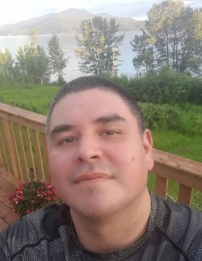
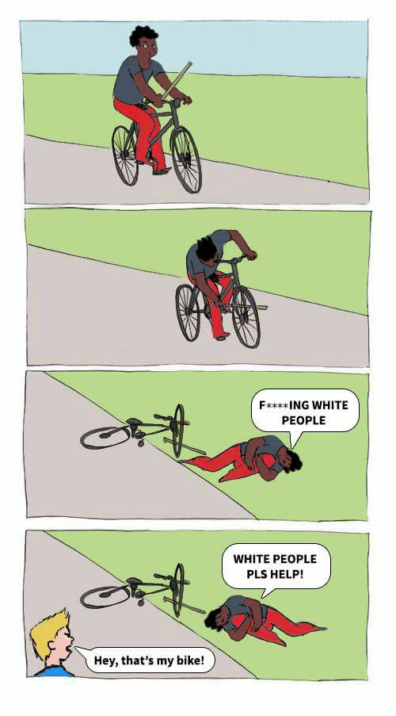

Imaginary Victimhood Amongst Abos
November 2nd, 2020
Another article from the anti-white Tyee:
TDC_ARTICLE_START
Fourteen years after his head-on crash, Aaron Young still can’t figure out why he thanked the nurses who rubbed broken glass into his wounds with a rag.
His sister looked on crying as two staff at University Hospital of Northern British Columbia said they were removing the shards of windshield that had embedded themselves into Young’s face and neck and suggested that he had been driving drunk. The cloth and broken glass shredded his already bleeding skin.
Young, a member of the Takla First Nation, felt as though he was being racially profiled and had immediately asked for a blood test to prove his sobriety. He had had just a few drinks the previous night, stopping early to sleep and ensure he was sober when he began driving.
But in that moment in the hospital, all he could think to say was “thank you, thank you, thank you,” through his shock.
Aaron Young
TDC_ARTICLE_STOP
So, come on guys, what was the result of the blood test? You made a big show of mentioning that he requested one, so what was the result? He also flat out admits that he was drinking “the night before”, slept for some short period of time, before getting into a car with multiple people. What exactly was the time between him drinking and getting into that car? He could have finished drinking at 12:59 PM, slept for 5 minutes, then got up, liquored out of his mind, before driving a car full of people into an oncoming truck. Which further raises the question, did he drive into the truck or vice versa? Since this propagandist doesn’t tell us, one can only presume that he drove into them.
You know, like a drunk person would?
Oh but I guess we don’t need to see that blood test, which a hospital almost definitely would have taken. We don’t need logic when the feelings of abos are hurt.
TDC_ARTICLE_START
His vehicle, filled with family members, had crashed with a logging truck on the way home from a celebration of life in Fort St. James. The truck’s headlights had seemed to come out of nowhere on a sharp curve in the early hours of the morning.
TDC_ARTICLE_STOP
Notice the use of passive voice here. “His vehicle had crashed with a logging truck.” See goy, things just happen!
Did he crash into that logging truck? It’s a very simple question. Was he in the logging trucks lane, or was the logging truck in his lane? What’s this irrelevant shit about the truck being around a sharp curve. This is just to fill the air until they can move on to the next story beat, without having to tell you that he was at fault for this crash.
TDC_ARTICLE_START
Less than a day later, Young tore off his neck brace and left the hospital with an injured neck, two sprained legs and a carotid artery bleed, cradling his head with his good hand. It was a 20-block walk home but staying at the hospital wasn’t an option.
“I felt alone and let down by people whose professional responsibilities were to treat me and my injuries regardless of anything,” said Young, now 42, from his home in Prince George.
“Racism is alive and well in the university hospital.”
TDC_ARTICLE_STOP
Yeah this seems like a classic case of a mentally unwell anti-white. A carotid artery bleed is not a fucking joke. That’s the artery in your neck FFS. Second, what is a “sprained leg?” Do they mean one of the knee ligaments? Maybe his ankle?
Also, those professionals likely saved this man's life. No matter how much he whined about them not princessing him while they treated him for life threatening injuries, they are the reason why he survived.
Once again, racism is an anti-white slur.
TDC_ARTICLE_START
The walk home was long and cold, and pain vibrated through his body with every step. When he eventually made it, he stayed in bed for three months to recover, the hike having worsened his injuries.
TDC_ARTICLE_STOP
Wait what!? He lay in bed for three months recovering? LOL. I snapped my collarbone in half, got surgery for this, and was back playing hockey in 10 weeks. Everything about this story is hilariously fake. His vague leg injuries apparently took this princess three fucking months to recover from. Yeah, I’ll take shit nobody believes for $1,000 please Mr. Trebek.
Anyway, this is a long article, so I’ll just give you some choice excerpts.
TDC_ARTICLE_START
B.C.’s current investigation into anti-Indigenous racism in the provincial health-care system, spurred by reports of emergency room staff playing a “game” that involved guessing the blood alcohol levels of Indigenous patients, has heard from more than 2,800 Indigenous people on experiences spanning decades.
TDC_ARTICLE_STOP
Lol. Based.
TDC_ARTICLE_START
...
Holmes said she is happy there is a provincial investigation, but the council has called on the federal government to create “an Indigenous-led task force that will mobilize northern B.C. hospitals to address inequities in care for Indigenous people, including our member nations.”
…
Holmes sent a letter last week to federal Minister of Crown-Indigenous Relations and Northern Affairs Carolyn Bennett, urging her to establish a community-driven task force in the wake of the death of Joyce Echaquan in a hospital in Joliette, Que.
…
Echaquan, a 37-year-old Atikamekw woman, broadcast some of the final moments of her life on Facebook live, where she is seen screaming in distress while hospital staff abuse her and said things like she is “only good for sex.”
TDC_ARTICLE_STOP
Boy do I ever have a writeup to do on that one. But you’ll just have to wait.
TDC_ARTICLE_START
...
Young was among the dozens in the online chorus supporting Holmes’ call, and says that night in 2006 walking home in the cold has caused irreparable damage to any trust he had in the health-care system.
TDC_ARTICLE_STOP
I just love how this guy has turned his decision to walk home into the cold, into Whitey forcing him to be cold. Like how fucking spoilt and stupid can these people be?
 TDC_ARTICLE_START
“For me, that feeling and trust in the medical system just didn’t exist, and nothing had transpired since where I felt confident in it,” he said.
Now a heavy equipment operator in forestry and a commercial helicopter pilot, he rarely goes to the doctor aside from medical exams for work and has avoided the dentist for four years, which led to a recent urgent root canal procedure.
And even when he has been forced to seek urgent care in the years since, he says his treatment was just as abysmal.
Days before Christmas in 2016, he said he was mugged by several men walking home from a holiday party and broke his ankle running away, hopping over a high fence next to his apartment building to what he thought would be a soft landing in a snowbank.
The father of three’s ankle was shattered on slick, solid ice below, and he crawled to the road to signal for help and an ambulance.
But he suspects that hospital staff sent him home the same night with no pain medication, construing the fact he had had a few drinks that evening as an indication he was seeking drugs.
Young spent Christmas in bed and alone that year in incredible pain after slipping onto his injured leg while getting home from the hospital on crutches.
TDC_ARTICLE_STOP
OMFG this guy. First of all, “dozens,” is not a big number. Secondly, this fucking dumbass abo breaks his own ankle “running away from several men.” Let me guess, the men who mugged you were abos right? Assuming this even happened at all.
However this dumbass broke his own ankle, he was clearly drunk off his ass, and probably belligerent, since they have to admit that he “had a few drinks that evening.”
Yeah, how dare those filthy white medical professionals not hand out prescription opiates to a blind drunk squaw when we’re in the middle of an opiate epidemic that has taken the lives of more than 2,000 British Columbians this past year alone. How dare they try their best to not have him overdose on opiates, or sell them to someone else to overdose.
Maybe the solution is to not give these people healthcare at all. After all, that would be cultural appropriation, would it not?
TDC_ARTICLE_START
“Peace for me looks like being able to positively contribute to my family, myself and the industry that I work in, and being traditional and effective in some way, shape or form,” said Young.
Having just fought with his younger brother, he took a relative’s words to heart and considered the bear a reincarnation of a member of his family, in that moment forgiving his sibling.
It was an emotional process filled with ceremony, sacred tobacco and tears. “It was just such a powerful moment. I remember feeling so sorry.”
TDC_ARTICLE_STOP
Yeah I’ll leave that as is.
Alright, the real takeway here is this “In Depth Probe into Anti-Indigineous Racism,” that the province of BC has undergone. I’m not sure if this is something that is highly serious, or more job-creation for anti-whites. I’ll keep you posted.